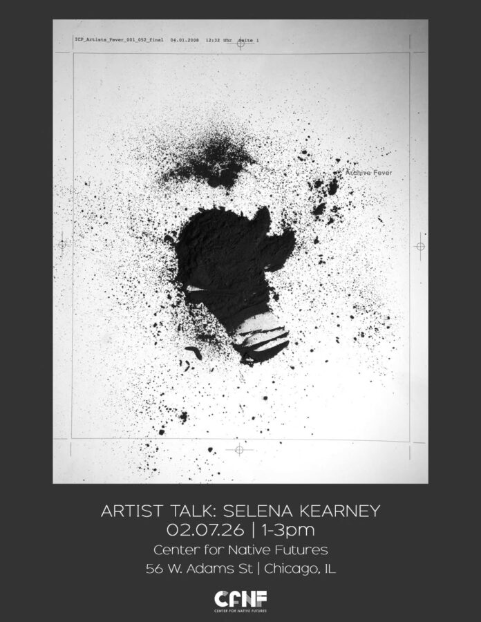

Selena Kearney: Artist Talk
Up next! Artist talk with Selena Kearney, whose works are in Sight of Resistance.
Saturday, February 7 at 1pm

Up next! Artist talk with Selena Kearney, whose works are in Sight of Resistance.
Saturday, February 7 at 1pm